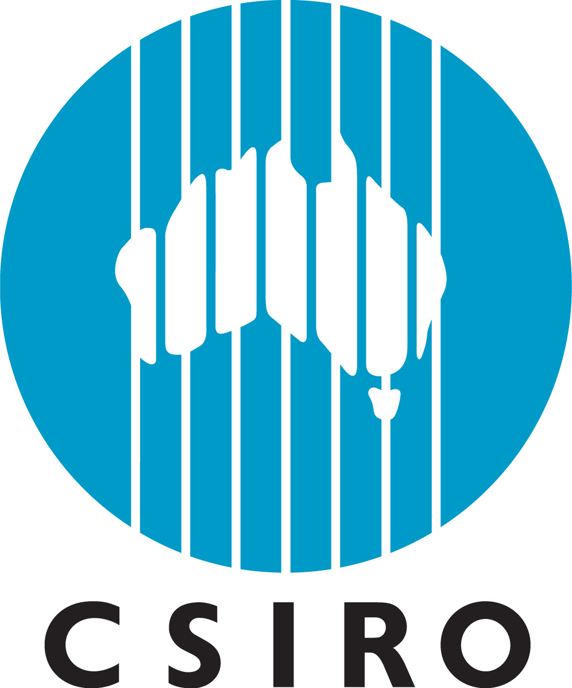
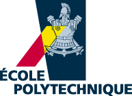

I have 12 years of experience in IT with a solid engineering background.
I like to embrace new challenges in my daily life and this is why I have changed jobs every 3-4 years on average.
I have had the opportunity to create from the ground up a QA department for a community of 400 developers.
I have led of group of 50 people encompassing all operational and human aspects.
I am passionate about engineering practices like agility, continuous integration, continuous delivery, test-driven development and DevOps.
I like learning new concepts every day. I do not give up easily. And I like the feeling of getting things done.
Employment History
(Jan 2015 - Current)
Nice, France
Senior manager, quality assurance
- Creation of a Quality Assurance department from 8 to 50 people
- Leading QA transformation in terms of organization, recruitment, process definition, tools migration, activity transfer
- Wide functional perimeter encompassing all Search, Shopping and Pricing products
- Handling of functional validation advocating customer's perception and non-regression with a focus on result determinin
- Implementation of continuous integration and continuous delivery principles by automating tests (80 000 tests run in 20mn)
- Manage professional staff, managers and conduct them through change
(Mar 2014 - Dec 2014)
Nice, France
Manager, product solutions
- Management of a team of 4-5 people with wide transversal expertise
- Pre-Sales, Implementation and Production Support activities for Airlines websites search engines
- Handling of RFP answers, workshops in various countries (Japan, Brazil, United Arab Emirates, India, ...), consultancy analysis
(Sep 2010 - Mar 2014)
Nice, France
Manager, product development analyst
- Management of a team of 6-8 people
- Planning, controlling and reporting team deliveries
- Implementation of Agile methodologies
(Dec 2007 - Aug 2010)
Nice, France
Product development analyst
- Elaboration of functional specifications of Airline Fare Search Engines
- Coordination of development across different teams
- Quality Assurance of newly developed software
(Aug 2006 - Nov 2007)
Nice, France
Product development analyst
- Working for Amadeus

(Mar 2004 - Jul 2004)
Perth, Australia
Internship - research assistant
- Research on earthquake time series analysis
(Aug 2003)
Dallas, US
Worker intership
- Worker in a warehouse
(Nov 2001 - Jun 2002)
Papeete, Tahiti
Officier chef de quart
- Officier Passerelle on DUMONT DURVILLE
Education
(Sep 2004 - Jul 2006)
Palo Alto, US
Master's of electrical engineering
- Working half time for research on cerebral image processing
- Applied Mathematics and Computer science courses

(Sep 2001 - Aug 2004)
Paris, France
Ecole polytechnique
- Applied Mathematics and Computer science courses
(Sep 1999 - Aug 2001)
Versailles, France
Ecole Sainte Geneviève
- MPSI/MP* courses
(Sep 1992 - Aug 1999)
Marseille, France
Ecole Lacordaire
- Baccalauréat Mention TB
Programming Skills
- Web (HTML, CSS, JavaScript, NodeJs, jQuery, PHP), Data Structures (JSON, XML, CSV, YAML, EDIFACT), Scripting languages (Python, Ruby), Web Frameworks (Ruby on Rails, Django), Mathematics & Statistics (Matlab, R, Numpy, Scikit-learn), Databases (SQL, MySQL, MongoDB), Object-Oriented (Java, C, C++), Methodologies (Agile Kanban & Scrum, CMMI, Test-Driven Development), Testing Tools (HP ALM - Quality Center), Docker
Personal Interests
- Music: “Médaille d’or de Formation Musicale” of the Regional Conservatory of Music of Marseille. Licensed in Piano Jazz curriculum in Conservatory of Music in Antibes. Performance of piano solo concerts, chamber music and piano concertos with orchestra
- Other: Yoga, Golf, Volley-ball, Underwater Diving (level 2), Table Tennis, driving license (Permis B) and boat license (Permis hauturier)